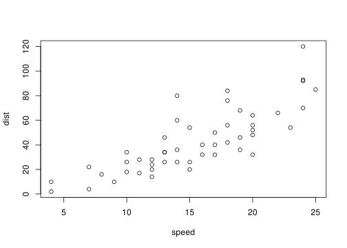

3.2 Here is the putting of a figure inside another built in environment
Example 3.1:
Here is an example.

Figure 3.2: Something to do with cars
This is a test. So, you need an empty line before and after the above for it to be a float. At the end of an environment this means that you need TWO empty lines. This is Pandoc.